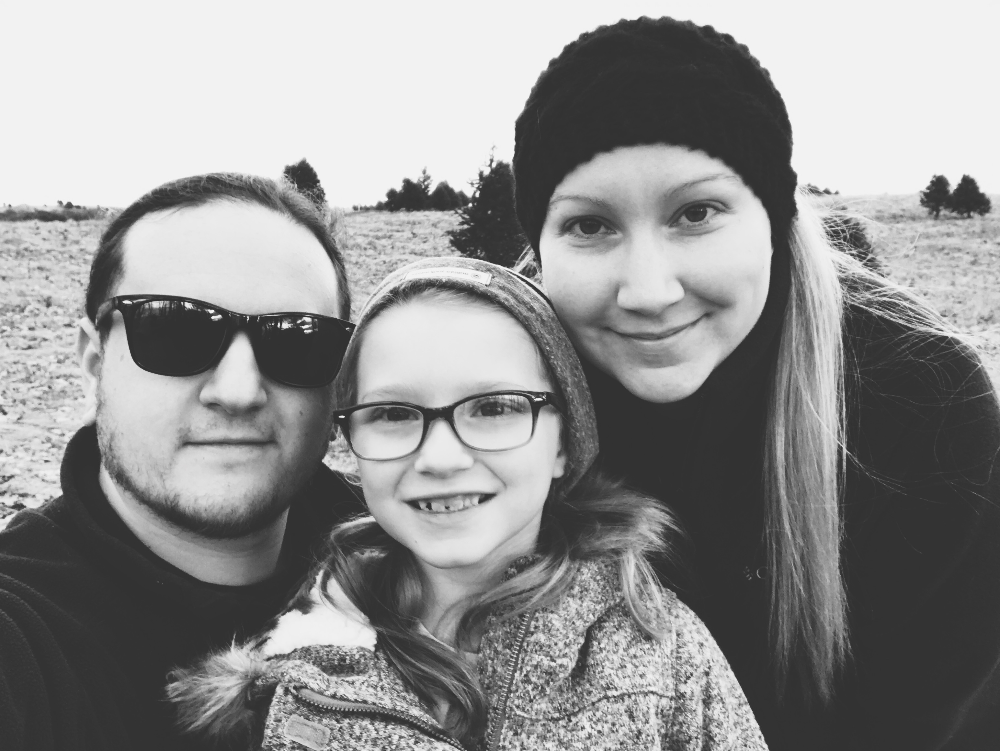

ABOUT ME
I am an I.T. professional located in Southeastern Pennsylvania. You can find information on me and my projects here and through other services on the web available in the links above. I am currently knee deep in iOS Development educational courses.
Professionally my skills include Windows Server Management, cabling, networking, helpdesk and web development. I am proficient in MacOS and Windows Desktop environments. I have been dedicated to a small delicatessen and catering company for over 15 years with some of my closest friends.
Personally, I am a husband and father to a beautiful family. When I'm not spending time with my family or working, I write music with my lifelong best friend. I enjoy drinking coffee and exploring the complexities of the machines that we rely on everyday.
PROJECTS